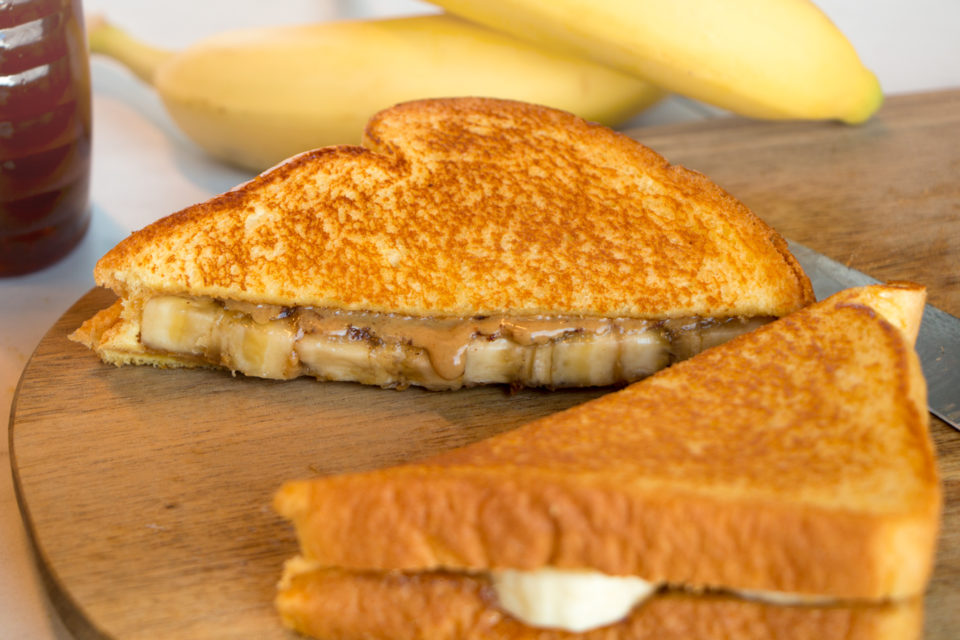

Grilled Peanut Butter and Banana Sandwich

Description
This grilled peanut butter and banana sandwich is a sweet, warm breakfast idea. It's cooked like a grilled cheese sandwich but filled with melted peanut butter and warm bananas.
Ingredients
- 2 tablespoons peanut butter
- 2 slices whole wheat bread
- 1 medium banana, sliced
- cooking spray
Steps
- Spread 1 tablespoon peanut butter onto one piece of bread and arrange banana slices over top. Spread remaining peanut butter onto second piece of bread, then invert and place over bananas; press firmly.
- Spray a skillet with cooking spray and heat over medium heat. Place sandwich onto the hot skillet and cook until golden brown, 2 to 3 minutes per side.
- Serve with hot tea or coffee.